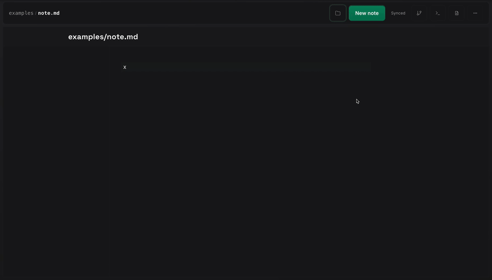

The Self Healing Platform and the Agent Store
I think DevOps as a separate identity, and a lot of agile ceremony around it, are already a bit obsolete. Engineers are doing development, operations, and lightweight management at the same time. The real leverage point now is platform engineering, and cloud infrastructure is a very good substrate for it.
The fit
The reason this matters is simple. A lot of what used to be split across dev, ops, and agile management is now part of one engineering loop. The same person writes code, ships it, watches it, debugs it, and makes prioritization calls while the system is live. That makes platform engineering more relevant, not less. Somebody has to build the substrate where that loop stays legible, safe, and fast.
Kubernetes is the clearest example. Pods, deployments, services, events, rollout status, and permissions are all available through a typed control surface. The same is true for most cloud systems. DNS, load balancers, queues, storage, certificates, and identity controls are exposed through APIs instead of hidden behind manual operator rituals. That makes cloud and Kubernetes close to a perfect fit for agentic work.
An agent can work against a real model of the system instead of screen scraping or guessing from text alone. It can ask bounded questions. What pods belong to this workload. What changed in this rollout. What is ready. What restarted. What event touched this object. Which action is allowed by policy. That is why infrastructure feels much more native for agents than most consumer software.
The agent store
The agent store is the durable context layer. It keeps operational facts between runs. It stores system definitions, dependencies, policies, secret references, environment metadata, and accepted observations in a structured form. It does not try to be a chat log. It is there so the next agent starts from current context instead of starting from zero.
In practical terms this means records with stable keys, typed namespaces, revision history, and explicit metadata. A service record can describe upstream dependencies, allowed environments, and ownership. A policy record can describe what requires approval. A secret record should store a reference to a runtime binding, not the secret value. The store also needs to stay exportable. Markdown with structured front matter, JSON documents with stable schemas, or relational rows with explicit record kinds all work as long as another process can read and update them deterministically.
The important split is evidence versus truth. Postgres holds current world facts, queue state, policy, and case state. ClickHouse holds logs, events, traces, and other high volume telemetry. Agents read both. Cloudflare was a good fit for the store because it provided a small authenticated API surface plus durable storage with a clean export path. Workers, D1, and R2 were a practical package, but the concept does not depend on Cloudflare. Any edge store with the same properties could work.
Portal in the loop
Part of the development loop around this work has been happening in Portal. The earlier note on Portal Browser Tmux at Web Scale was mostly about layout and control surfaces. This loop is smaller. A lot of useful progress starts before there is a clean branch, a clean ticket, or even a clean problem statement. It starts as a rough note, a small code run, or a quick test that should stay close to the original thought.

That is the part that turned out to matter. Open a note. Drop in a small executable block. Run it in place. Keep the result next to the text that motivated it. Delete it if it was a dead end. Keep it if it turned into something useful. It is not trying to replace an editor, a shell, or a full notebook. It is a lighter surface for the messy part that happens before the work deserves heavier structure.
The useful property is locality. The note, the command, the output, and the next revision stay together. A rough command does not vanish into shell history. A half formed idea does not get copied across three other tools before it is ready. That matters for infrastructure work because the same discipline that helps an agent keep evidence close to truth also helps a person keep early reasoning close to the thing being tested.
The self healing loop
Self healing does not mean giving a model broad write access and hoping for the best. It means running a loop with clear boundaries. Deterministic monitors watch the environment continuously. A trigger opens a durable case. An agent enters that case with the right scope, policies, and prior state. It reads Kubernetes directly, reads recent evidence from ClickHouse, compares that with current truth in Postgres, and writes back a structured finding.
The next step depends on policy. Some actions are safe enough to run directly, such as restarting a stateless worker, marking a case degraded, or asking for more evidence. Some actions need approval. Some cases should stop at diagnosis. The point is that the loop is structured, bounded, and inspectable.
Kubernetes example
A concrete example is a worker rollout that leaves stale runtime registrations behind. The public route can still be healthy. The new pod can still be healthy. Kubernetes can show that the deployment is ready and that there are no current warning events. But Postgres can still show old worker entries that have not aged out, and recent case history can still show failures from the earlier period. ClickHouse can show that logs quieted down after the new pod came up.
That combination matters. Logs alone can make the system look healthy too early. Control state alone can make it look broken for too long. An agent that reads Kubernetes, ClickHouse, and Postgres in one loop can mark the case degraded instead of failed. That is a better result. Service stays live. The stale state is surfaced. A noisy or risky remediation path is avoided.
Why Kubernetes fits agents so well
Kubernetes is already an API driven operating system. Objects are typed, namespaced, labeled, and permissioned. Desired state and observed state are explicit. RBAC provides a clean safety boundary. Namespaces and labels provide a clean working set. An agent can work with small scoped reads and small scoped writes instead of broad shell access. That is unusually well matched to agentic systems.
That same pattern extends cleanly to the rest of cloud infrastructure. DNS, certificates, identity objects, queues, object storage, and network configuration are all API driven. That makes the cloud a very good environment for agents as long as the runtime keeps a clear split between evidence, truth, and allowed actions.